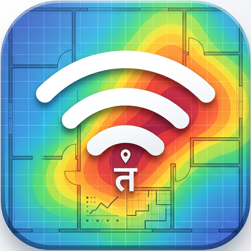
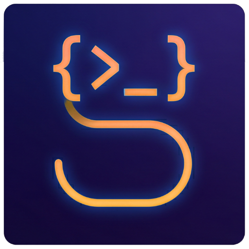

LORD ZHOPUDEY
Earl of Thaneshire
संशये सति निद्रां गच्छ
in dubio, fiat somnus
Self-hosted services being worked on from a closet in Thaneshire, powered by Unraid. What is their purpose? Death would say, "THERE IS SOMETHING DEEPLY HUMAN ABOUT BUILDING ELABORATE SYSTEMS TO AVOID THE SIMPLE ACT OF DECIDING WHAT YOU WANT." But we are not doing this to please Death. We are simply doing this to achieve Nirmal Anand.
ETA for final version, did you ask? What is that?
You could ask us for more details, but we might be pursuing our house motto — When in doubt, go to sleep.
Workshop
Munshiji मुंशीजीprivate
Self-hosted group expense splitter — Splitwise, but mine. INR-native, debt-simplifying, and designed to keep the accounts as clear as the mind.
Grantha ग्रंथprivate
A sophisticated sanctuary for the digital library. It transforms chaotic folders into a curated, enriched collection, focusing on the human-in-the-loop.
Sanchalak संचालकprivate
Tremendous efforts to bring Netflix-style recommendations to a self-hosted Jellyfin library. Triages the queue, learns taste one decision at a time, and points at the next thing worth watching. Death will have thoughts about this.

Taranga तरंगprivate
DIY WiFi Site Survey for Android. A wave in progress that maps the invisible, building real-time signal heatmaps to visualize the RF environment.

Sutra सूत्रprivate
A thread between the closet and the iPad. Think of it as a very tired bouncer for your iPad: it catches all the screaming, jagged JSON brackets and strictly forbids the algorithm from spilling its internal organs all over your screen.